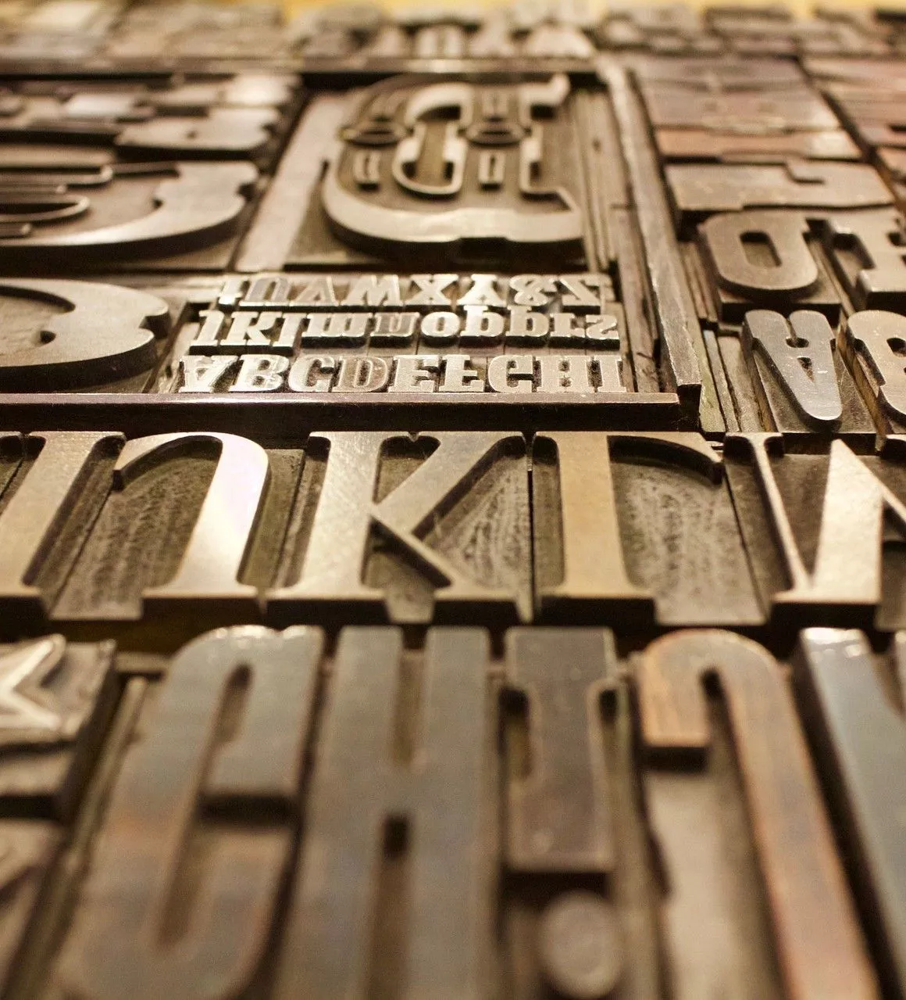
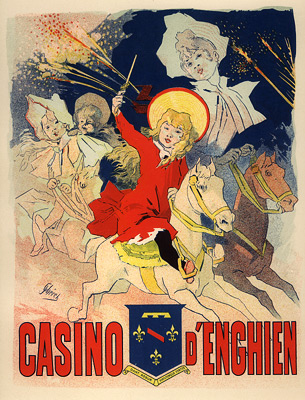
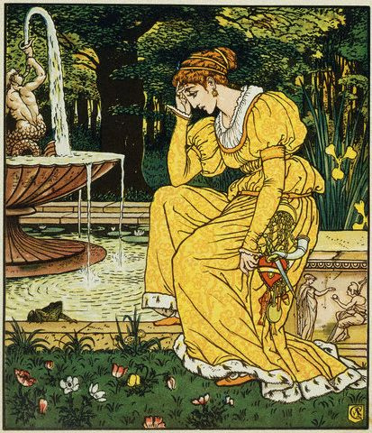
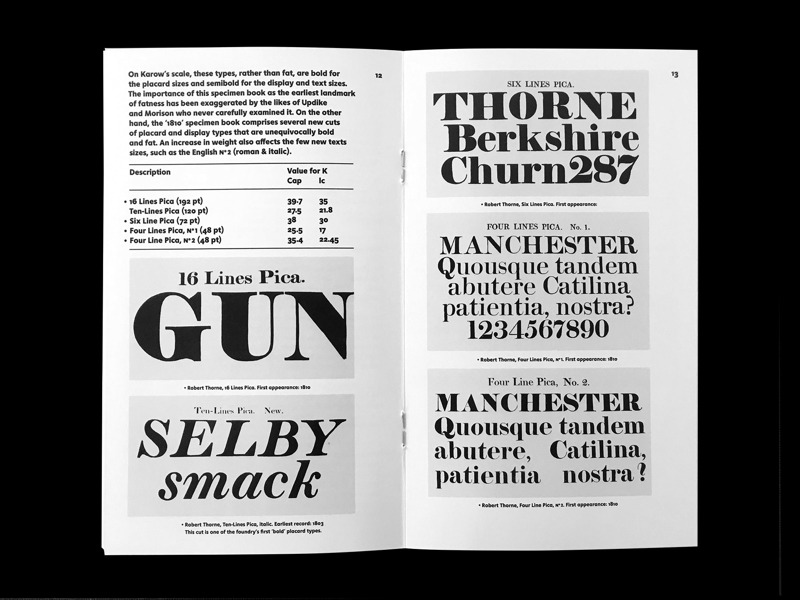
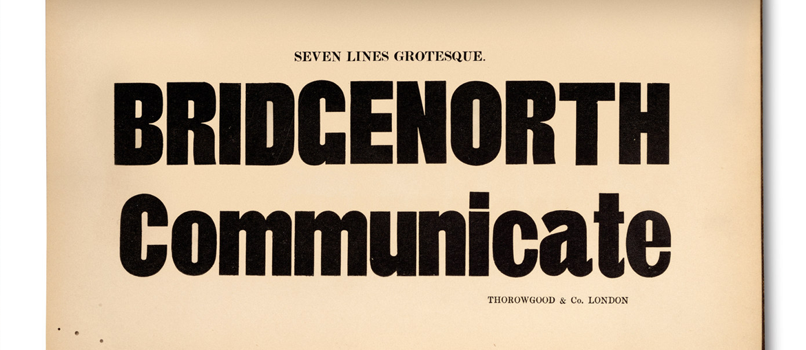
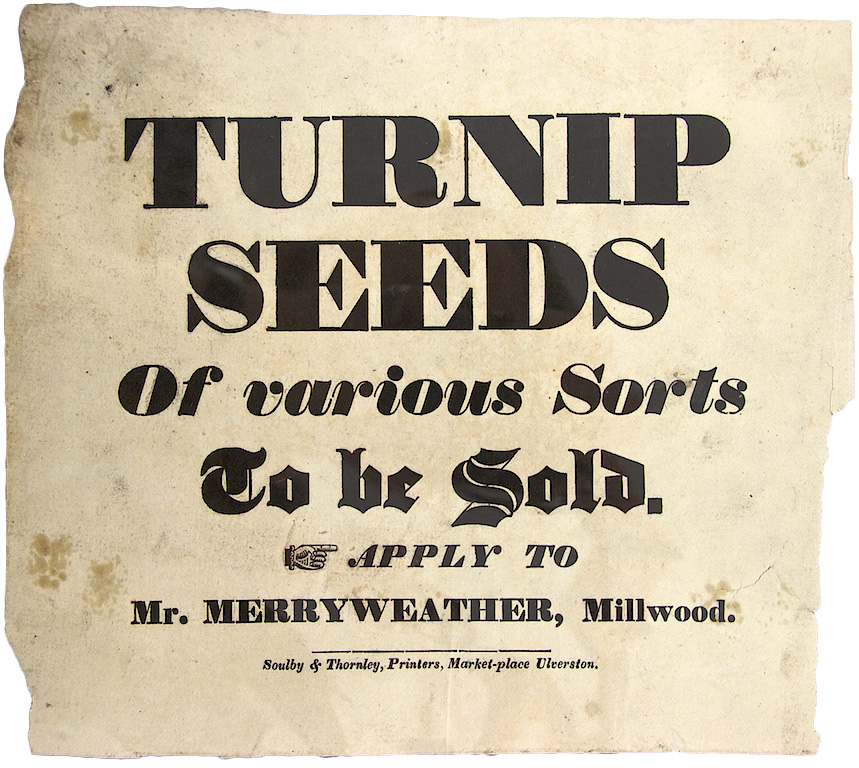

DISEINU GRAFIKOAREN IRAULTZA
Industria Aroko berrikuntza bisualak eta estetika berria
Teknika eta Argazkigintza

Egurezko tipoak
Darius Wells-ek 1827an asmatutako makineriaren bidez, tamaina handiko letrak egurrean ekoizten hasi ziren. Metala baino arinagoa eta merkeagoa zenez, kartel erraldoiak deformatu gabe inprimatzea ahalbidetu zuen.
.jpg)
Dagerrotipoak
1839an Louis Daguerrek aurkeztua. Kobre-plaka zilarreztatuen gainean irudi nitidoak lortzen zituen. Argazkigintzaren lehen jauzi kualitatiboa izan zen, irudi bakoitza objektu bakar eta errepikaezin bihurtuz.
Kolorea eta Ilustrazioa

Kromolitografiak
Olioaren eta uraren arteko aldarapen kimikoan oinarritutako inprimaketa. Louis Prangek teknika hau findu eta kolorea herritar guztien etxeetara eramatea lortu zuen, artea demokratizatuz.

Urrezko Aroko Ilustrazioak
Crane, Caldecott eta Greenaway hirukoak liburua artelan integral moduan ulertu zuten. Irudia ez zen testuaren laguntzaile soil bat, kontakizunaren muin narratiboa baizik.
Berrikuntza Tipografikoak

Fat Faces
Robert Thornek 1803an sortuak. Letra klasikoen kontrastea muturreraino eraman zuen, trazu oso lodiekin hiri zaratatsuetan kontsumitzailearen arreta begiratu batean harrapatzeko.

Slab Serif (Egipziarrak)
Vincent Figginsek 1815ean plazaratuak. Erremate karratu eta sendoak dituzte, Napoleonen ostean Europan zegoen Egiptorekiko lilura eta monumentaltasuna irudikatuz.

Sans Serif (Groteskoak)
William Caslon IV.ak 1816an aurkeztua. Hasieran "Grotesque" deitua, hamarkadak behar izan zituen onartua izateko. Gaur egun diseinu modernoaren eta soiltasunaren ikur nagusia da.